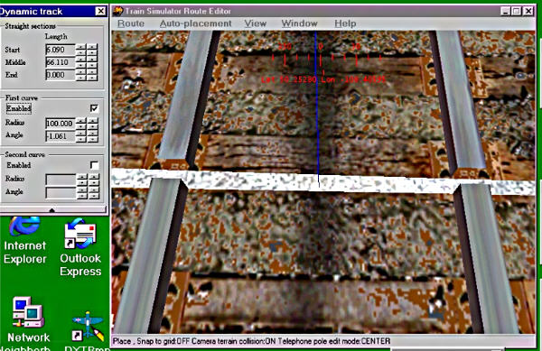

Hmmm, that's not gonna work. The curve is just about correct, because the rails are almost parallel, but the end of the dynamic track is too far to the right. Normally I would adjust it to the left by reducing the length of the "start" piece of straight track, but it's already down to the minimum. Gonna have to tighten the radius, let's try 100 meters.
That's better, it moved it to the left so much I had to increase the "start" section to 8 meters to move it back to the right, and had to increase the middle to get my overlap back. You always want a few meters of overlap at the end of the track at this point, because it makes it easier to see if the lineup is correct. As you can see, it's not, the dynamic track is cocked to the left. Since it only curves left, I need to tighten the curve to angle it more to the left, or loosen the curve to angle more to the right. So in this case I need to reduce the angle (up arrow) to cock it to the right.
At this point I'm also using the fine tuning buttons on the first piece of straight track to make it easier to see if the rails are parallel. This looks pretty close, now to go for horizontal alignment using the same buttons.
Looks pretty smooth, but the game won't accept that much overlap, so now is the time to get rid of it. So click on the down arrows on the "middle" section to reduce the length and open a gap. Then zoom in closer to see the final adjustment. Holding down the END key while using the keyboard arrows makes this easier to position the view.

Now we use the fine tune buttons to adjust the length of the middle section to close the gap.
The right side is closing before the left, indicating that the angle isn't exactly right. Two more strokes on the fine tune up button would close the gap, with only a little
overlap on the right hand rail, and the game would accept it like that. But let's get finnicky and try for a perfect join. Lessee, gap on the left bigger, cocked too far left, need to decrease the angle to cock it more to the right. Up arrow on the angle, less curve. Then I gotta adjust the length of the two straight sections to line it up again.

Can't beat that. My own personal standard to avoid rough track joints is the second gap has to close within 2 fine strokes after the first, but until you get comfortable with doing this it's not really necessary to get that persnickety.
The final acid test, click on the terrain somewhere to deselect the dynamic track piece. If the blue line disappears, it's a valid track join.